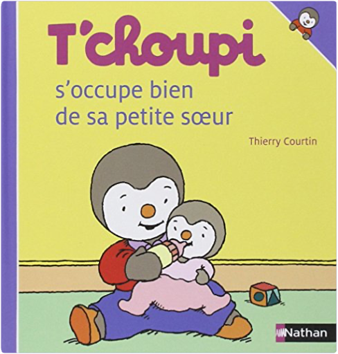

 t'choupi, tome 30 : s'occupe bien de sa petite soeurthierry courtin  Tchoupi, l\ ami des petits Une collection qui raconte les aventures de T\ choupi, le petit pingouin curieux, ouvert, enthousiaste et plein d\ énergie ! Fann...  Tchoupi, l\ ami des petits T\ choupi veut faire du vélo mais il doit attendre que papa ait installé un panier dessus. Il est très impatient et papa est très e... |  Tchoupi, l\ ami des petits Chaque titre aborde une situation de la vie quotidienne de T\ choupi : ses grands bonheurs, ses petits soucis. Tchoupi a peur des...  T\ choupi, l\ ami des petits ! Aujourd\ hui T\ choupi ne fait que des bêtises : il tire au ballon dans les fleurs de maman, maquille sa petite sœur avec des feutres et d...  NEUF JAMAIS OUVERT.EXP RAPIDE ET SOIGNEE.. Avertissement par e-mail de l'envoi du colis |

Julien
Collection Total:
2 005 Items
2 005 Items
Last Updated:
Jun 23, 2023
Jun 23, 2023


 Made with Delicious Library
Made with Delicious Library